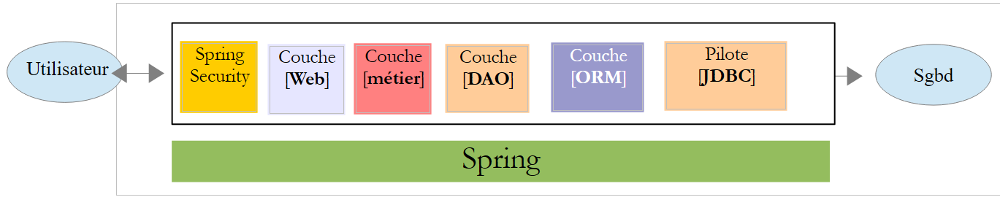
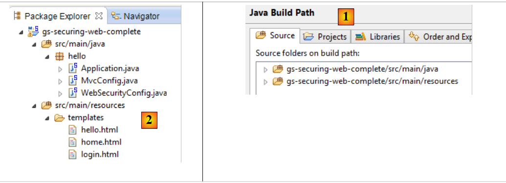
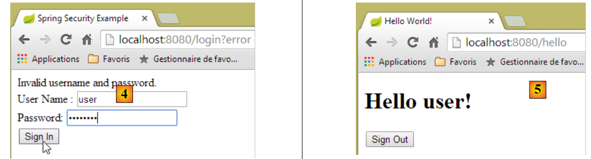

19. تأمين الوصول إلى خدمة ويب باستخدام Spring Security
19.1. دور Spring Security في تطبيق الويب
لنحدد مكانة Spring Security في عملية تطوير تطبيق ويب. غالبًا ما يتم بناء هذا التطبيق على بنية متعددة الطبقات مثل التالية:
 |
- لا تسمح الطبقة [Spring Security] بالوصول إلى الطبقة [web] إلا للمستخدمين المصرح لهم.
19.2. دليل تعليمي حول Spring Security
سنقوم مرة أخرى باستيراد دليل Spring باتباع الخطوات من 1 إلى 3 أدناه:
 |
 |
يتكون المشروع من العناصر التالية:
- في المجلد [templates]، توجد صفحات المشروع HTML؛
- [Application]: هي الفئة القابلة للتنفيذ للمشروع؛
- [MvcConfig]: هي فئة تكوين Spring MVC؛
- [WebSecurityConfig]: هي فئة تكوين Spring Security؛
19.2.1. إعدادات Maven
المشروع [3] هو مشروع Maven. دعونا نلقي نظرة على ملفه [pom.xml] لمعرفة تبعياته:
<?xml version="1.0" encoding="UTF-8"?>
<project xmlns="http://maven.apache.org/POM/4.0.0" xmlns:xsi="http://www.w3.org/2001/XMLSchema-instance"
xsi:schemaLocation="http://maven.apache.org/POM/4.0.0 http://maven.apache.org/xsd/maven-4.0.0.xsd">
<modelVersion>4.0.0</modelVersion>
<groupId>org.springframework</groupId>
<artifactId>gs-securing-web</artifactId>
<version>0.1.0</version>
<parent>
<groupId>org.springframework.boot</groupId>
<artifactId>spring-boot-starter-parent</artifactId>
<version>1.2.3.RELEASE</version>
</parent>
<dependencies>
<dependency>
<groupId>org.springframework.boot</groupId>
<artifactId>spring-boot-starter-thymeleaf</artifactId>
</dependency>
<!-- tag::security[] -->
<dependency>
<groupId>org.springframework.boot</groupId>
<artifactId>spring-boot-starter-security</artifactId>
</dependency>
<!-- end::security[] -->
</dependencies>
<properties>
<start-class>hello.Application</start-class>
</properties>
<build>
<plugins>
<plugin>
<groupId>org.springframework.boot</groupId>
<artifactId>spring-boot-maven-plugin</artifactId>
</plugin>
</plugins>
</build>
</project>
- الأسطر 10-14: المشروع هو مشروع Spring Boot؛
- الأسطر 17-20: تبعيات على إطار العمل [Thymeleaf]؛
- الأسطر 22-25: تبعيات على إطار العمل Spring Security؛
19.2.2. طرق عرض Thymeleaf
 |
تبدو طريقة العرض [home.html] كما يلي:
 |
<!DOCTYPE html>
<html xmlns="http://www.w3.org/1999/xhtml"
xmlns:th="http://www.thymeleaf.org"
xmlns:sec="http://www.thymeleaf.org/thymeleaf-extras-springsecurity3">
<head>
<title>Spring Security Example</title>
</head>
<body>
<h1>Welcome!</h1>
<p>
Click <a th:href="@{/hello}">here</a> to see a greeting.
</p>
</body>
</html>
- السطر 12: ستُنشئ السمة [th:href="@{/hello}"] السمة [href] لعلامة <a>. ستؤدي القيمة [@{/hello}] إلى إنشاء المسار [<context>/hello]، حيث يمثل [context] سياق تطبيق الويب؛
الرمز HTML الذي تم إنشاؤه هو التالي:
<!DOCTYPE html>
<html xmlns="http://www.w3.org/1999/xhtml" xmlns:sec="http://www.thymeleaf.org/thymeleaf-extras-springsecurity3">
<head>
<title>Spring Security Example</title>
</head>
<body>
<h1>Welcome!</h1>
<p>
Click
<a href="/hello">here</a>
to see a greeting.
</p>
</body>
</html>
الطريقة [hello.html] هي كما يلي:
 |
<!DOCTYPE html>
<html xmlns="http://www.w3.org/1999/xhtml"
xmlns:th="http://www.thymeleaf.org"
xmlns:sec="http://www.thymeleaf.org/thymeleaf-extras-springsecurity3">
<head>
<title>Hello World!</title>
</head>
<body>
<h1 th:inline="text">Hello [[${#httpServletRequest.remoteUser}]]!</h1>
<form th:action="@{/logout}" method="post">
<input type="submit" value="Sign Out" />
</form>
</body>
</html>
- السطر 9: ستقوم السمة [th:inline="text"] بإنشاء نص العلامة <h1>. يحتوي هذا النص على تعبير $ يجب تقييمه. العنصر [[${#httpServletRequest.remoteUser}]] هو قيمة السمة [RemoteUser] للاستعلام HTTP الحالي. وهو اسم المستخدم المسجل الدخول؛
- السطر 10: نموذج HTML. سيؤدي السمة [th:action="@{/logout}"] إلى إنشاء السمة [action] لعلامة [form]. ستؤدي القيمة [@{/logout}] إلى إنشاء المسار [<context>/logout] حيث [context] هو سياق تطبيق الويب؛
الرمز HTML الذي تم إنشاؤه هو التالي:
<!DOCTYPE html>
<html xmlns="http://www.w3.org/1999/xhtml" xmlns:sec="http://www.thymeleaf.org/thymeleaf-extras-springsecurity3">
<head>
<title>Hello World!</title>
</head>
<body>
<h1>Hello user!</h1>
<form method="post" action="/logout">
<input type="submit" value="Sign Out" />
<input type="hidden" name="_csrf" value="b152e5b9-d1a4-4492-b89d-b733fe521c91" />
</form>
</body>
</html>
- السطر 8: ترجمة Hello [[${#httpServletRequest.remoteUser}]]!؛
- السطر 9: ترجمة @{/logout}؛
- السطر 11: حقل مخفي يُسمى (السمة name) _csrf؛
الطريقة الأخيرة [login.html] هي كما يلي:
 |
<!DOCTYPE html>
<html xmlns="http://www.w3.org/1999/xhtml"
xmlns:th="http://www.thymeleaf.org"
xmlns:sec="http://www.thymeleaf.org/thymeleaf-extras-springsecurity3">
<head>
<title>Spring Security Example</title>
</head>
<body>
<div th:if="${param.error}">Invalid username and password.</div>
<div th:if="${param.logout}">You have been logged out.</div>
<form th:action="@{/login}" method="post">
<div>
<label> User Name : <input type="text" name="username" />
</label>
</div>
<div>
<label> Password: <input type="password" name="password" />
</label>
</div>
<div>
<input type="submit" value="Sign In" />
</div>
</form>
</body>
</html>
- السطر 9: السمة [th:if="${param.error}"] تجعل علامة <div> لا تُنشأ إلا إذا كانت السمة URL التي تعرض صفحة تسجيل الدخول تحتوي على المعلمة [error] (http://context/login?error)؛
- السطر 10: السمة [th:if="${param.logout}"] تجعل العلامة <div> لا تُنشأ إلا إذا كانت العلامة URL التي تعرض صفحة تسجيل الدخول تحتوي على المعلمة [logout] (http://context/login?logout)؛
- الأسطر 11-23: نموذج HTML؛
- السطر 11: سيتم إرسال النموذج إلى URL [<context>/login] حيث <context> هو سياق تطبيق الويب؛
- السطر 13: حقل إدخال باسم [username]؛
- السطر 17: حقل إدخال باسم [password]؛
الرمز HTML الذي تم إنشاؤه هو التالي:
<!DOCTYPE html>
<html xmlns="http://www.w3.org/1999/xhtml" xmlns:sec="http://www.thymeleaf.org/thymeleaf-extras-springsecurity3">
<head>
<title>Spring Security Example </title>
</head>
<body>
<div>
You have been logged out.
</div>
<form method="post" action="/login">
<div>
<label>
User Name :
<input type="text" name="username" />
</label>
</div>
<div>
<label>
Password:
<input type="password" name="password" />
</label>
</div>
<div>
<input type="submit" value="Sign In" />
</div>
<input type="hidden" name="_csrf" value="ef809b0a-88b4-4db9-bc53-342216b77632" />
</form>
</body>
</html>
يُلاحظ في السطر 28 أن Thymeleaf أضاف حقلًا مخفيًا باسم [_csrf].
19.2.3. تكوين Spring لـ MVC
 |
تقوم الفئة [MvcConfig] بتكوين إطار عمل Spring MVC:
package hello;
import org.springframework.context.annotation.Configuration;
import org.springframework.web.servlet.config.annotation.ViewControllerRegistry;
import org.springframework.web.servlet.config.annotation.WebMvcConfigurerAdapter;
@Configuration
public class MvcConfig extends WebMvcConfigurerAdapter {
@Override
public void addViewControllers(ViewControllerRegistry registry) {
registry.addViewController("/home").setViewName("home");
registry.addViewController("/").setViewName("home");
registry.addViewController("/hello").setViewName("hello");
registry.addViewController("/login").setViewName("login");
}
}
- السطر 7: تعمل التعليقة التوضيحية [@Configuration] على تحويل الفئة [MvcConfig] إلى فئة تكوين؛
- السطر 8: الفئة [MvcConfig] تمتد من الفئة [WebMvcConfigurerAdapter] لإعادة تعريف بعض أساليبها؛
- السطر 10: إعادة تعريف إحدى طرق الفئة الأم؛
- الأسطر 11-16: تسمح الطريقة [addViewControllers] بربط URL بعروض HTML. ويتم إجراء الروابط التالية فيها:
عرض | |
/templates/home.html | |
/templates/hello.html | |
/templates/login.html |
اللاحقة [html] والمجلد [templates] هما القيمتان الافتراضيتان اللتان يستخدمهما Thymeleaf. ويمكن تغييرهما من خلال التهيئة. يجب أن يكون المجلد [templates] موجودًا في جذر مسار الفئات (Classpath) للمشروع:
 |
في المثال أعلاه [1]، المجلدان [java] و [resources] هما مجلدان مصدران (source folders). وهذا يعني أن محتوياتهما ستكون في جذر مسار الفئات (Classpath) للمشروع. وبالتالي، في المجلد [2]، سيكون المجلدان [hello] و [templates] في جذر مسار الفئات (Classpath).
19.2.4. إعداد Spring Security
 |
تقوم الفئة [WebSecurityConfig] بتكوين إطار عمل Spring Security:
package hello;
import org.springframework.context.annotation.Configuration;
import org.springframework.security.config.annotation.authentication.builders.AuthenticationManagerBuilder;
import org.springframework.security.config.annotation.web.builders.HttpSecurity;
import org.springframework.security.config.annotation.web.configuration.WebSecurityConfigurerAdapter;
import org.springframework.security.config.annotation.web.servlet.configuration.EnableWebMvcSecurity;
@Configuration
@EnableWebMvcSecurity
public class WebSecurityConfig extends WebSecurityConfigurerAdapter {
@Override
protected void configure(HttpSecurity http) throws Exception {
http.authorizeRequests().antMatchers("/", "/home").permitAll().anyRequest().authenticated();
http.formLogin().loginPage("/login").permitAll().and().logout().permitAll();
}
@Override
protected void configure(AuthenticationManagerBuilder auth) throws Exception {
auth.inMemoryAuthentication().withUser("user").password("password").roles("USER");
}
}
- السطر 9: تعمل العلامة التوضيحية [@Configuration] على تحويل الفئة [WebSecurityConfig] إلى فئة تكوين؛
- السطر 10: التعليق التوضيحي [@EnableWebSecurity] يجعل الفئة [WebSecurityConfig] فئة تكوين لـ Spring Security؛
- السطر 11: الفئة [WebSecurity] تمتد من الفئة [WebSecurityConfigurerAdapter] لإعادة تعريف بعض طرقها؛
- السطر 12: إعادة تعريف إحدى طرق الفئة الأم؛
- الأسطر 13-16: يتم إعادة تعريف الطريقة [configure(HttpSecurity http)] لتحديد حقوق الوصول إلى مختلف URL في التطبيق؛
- السطر 14: تتيح الطريقة [http.authorizeRequests()] ربط URL بحقوق الوصول. ويتم إجراء الروابط التالية فيها:
القاعدة | الرمز | |
الوصول دون مصادقة | | |
الوصول بعد المصادقة فقط |
- السطر 15: يحدد طريقة المصادقة. تتم المصادقة عبر نموذج URL [/login] متاح للجميع [http.formLogin().loginPage("/login").permitAll()]. كما أن تسجيل الخروج (logout) متاح للجميع؛
- الأسطر 19-21: تعيد تعريف الطريقة [configure(AuthenticationManagerBuilder auth)] التي تدير المستخدمين؛
- السطر 20: تتم المصادقة باستخدام مستخدمين محددين بشكل «ثابت» [auth.inMemoryAuthentication()]. يتم تعريف المستخدم هنا باستخدام اسم المستخدم [user]، وكلمة المرور [password]، والدور [USER]. يمكن منح نفس الحقوق للمستخدمين الذين لديهم نفس الدور؛
19.2.5. فئة قابلة للتنفيذ
 |
الفئة [Application] هي كما يلي:
package hello;
import org.springframework.boot.autoconfigure.EnableAutoConfiguration;
import org.springframework.boot.SpringApplication;
import org.springframework.context.annotation.ComponentScan;
import org.springframework.context.annotation.Configuration;
@EnableAutoConfiguration
@Configuration
@ComponentScan
public class Application {
public static void main(String[] args) throws Throwable {
SpringApplication.run(Application.class, args);
}
}
- السطر 8: يطلب التعليق التوضيحي [@EnableAutoConfiguration] من Spring Boot (السطر 3) إجراء التكوين الذي لم يقم المطور بإجرائه صراحةً؛
- السطر 9: يجعل من الفئة [Application] فئة تكوين Spring؛
- السطر 10: يطلب فحص مجلد الفئة [Application] للبحث عن مكونات Spring. وبالتالي سيتم اكتشاف الفئتين [MvcConfig] و [WebSecurityConfig] لأنهما تحملان التعليق التوضيحي [@Configuration]؛
- السطر 13: الطريقة [main] للفئة القابلة للتنفيذ؛
- السطر 14: يتم تنفيذ الطريقة الثابتة [SpringApplication.run] مع فئة التكوين [Application] كمعلمة. لقد سبق أن تعاملنا مع هذه العملية ونعلم أن خادم Tomcat المضمن في تبعيات Maven الخاصة بالمشروع سيتم تشغيله ونشر المشروع عليه. وقد رأينا أن أربع عمليات URL تُدار بواسطة [/, /home, /login, /hello] وأن بعضها محمي بحقوق الوصول.
19.2.6. اختبارات التطبيق
لنبدأ بطلب URL [/]، وهي واحدة من أربع عمليات URL التي تم قبولها. وهي مرتبطة بالعرض [/templates/home.html]:
 |
إن URL المطلوب [/] متاح للجميع. ولهذا السبب حصلنا عليه. الرابط [here] هو التالي:
سيتم طلب URL [/hello] عند النقر على الرابط. وهذا الرابط محمي:
القاعدة | الرمز | |
الوصول دون مصادقة | | |
الوصول بعد المصادقة فقط |
يجب المصادقة للحصول عليه. سيقوم Spring Security عندئذ بإعادة توجيه متصفح العميل إلى صفحة المصادقة. وفقًا للتكوين المعروض، فإنها صفحة URL [/login]. هذه الصفحة متاحة للجميع:
http.formLogin().loginPage("/login").permitAll().and().logout().permitAll();
وبذلك نحصل على [1]:
 |
الرمز المصدري للصفحة التي تم الحصول عليها هو التالي:
- في السطر 7، يظهر حقل مخفي غير موجود في الصفحة الأصلية [login.html]. وقد أضافه Thymeleaf. ويهدف هذا الرمز المسمى CSRF (تزوير الطلبات عبر المواقع) إلى إزالة ثغرة أمنية. يجب إعادة إرسال هذا الرمز إلى Spring Security مع المصادقة حتى يتم قبولها؛
ونذكر أن Spring Security لا يتعرف إلا على المستخدم user/password. إذا أدخلنا أي شيء آخر في [2]، فسنحصل على نفس الصفحة مع رسالة خطأ في [3]. قام Spring Security بإعادة توجيه المتصفح إلى URL [http://localhost:8080/login?error]. أدى وجود المعلمة [error] إلى عرض العلامة:
<div th:if="${param.error}">Invalid username and password.</div>
الآن، دعونا ندخل القيم المتوقعة user/password [4]:
 |
- في [4]، نقوم بتسجيل الدخول؛
- في [5]، يقوم Spring Security بإعادة توجيهنا إلى URL [/hello] لأن هذا هو URL الذي كنا نطلبه عندما تمت إعادة توجيهنا إلى صفحة تسجيل الدخول. تم عرض هوية المستخدم في السطر التالي من [hello.html]:
تعرض الصفحة [5] النموذج التالي:
<form th:action="@{/logout}" method="post">
<input type="submit" value="Sign Out" />
</form>
عند النقر على الزر [Sign Out]، سيتم إنشاء POST على URL [/logout]. وهذا الملف، مثل ملف URL و[/login]، متاح للجميع:
http.formLogin().loginPage("/login").permitAll().and().logout().permitAll();
في جمعيتنا URL / vues، لم نحدد أي شيء بخصوص URL و [/logout]. ماذا سيحدث؟ لنجرب:
 |
- في [6]، نضغط على الزر [Sign Out]؛
- في [7]، نلاحظ أننا تمت إعادة توجيهنا إلى URL [http://localhost:8080/login?logout]. Spring Security هو الذي طلب إعادة التوجيه هذه. أدى وجود المعلمة [logout] في URL إلى عرض السطر التالي في العرض:
<div th:if="${param.logout}">You have been logged out.</div>
19.2.7. الخلاصة
في المثال السابق، كان بإمكاننا كتابة تطبيق الويب أولاً ثم تأمينه لاحقًا. Spring Security ليس تدخليًا. يمكننا تطبيق الأمان على تطبيق ويب مكتوب بالفعل. علاوة على ذلك، اكتشفنا النقاط التالية:
- من الممكن تعريف صفحة مصادقة؛
- يجب أن تكون المصادقة مصحوبة برمز CSRF الصادر عن Spring Security؛
- إذا فشلت عملية المصادقة، يتم إعادة توجيه المستخدم إلى صفحة المصادقة مع إضافة معلمة error في الرمز URL؛
- إذا نجحت عملية المصادقة، يتم إعادة توجيه المستخدم إلى الصفحة المطلوبة عند إتمام المصادقة. إذا تم طلب صفحة المصادقة مباشرةً دون المرور بصفحة وسيطة، فإن Spring Security يعيد توجيهنا إلى URL [/] (لم يتم عرض هذه الحالة)؛
- يتم تسجيل الخروج عن طريق طلب الصفحة URL [/logout] باستخدام معلمة POST. ثم يقوم Spring Security بإعادة توجيهنا إلى صفحة المصادقة مع المعلمة logout في URL؛
تستند جميع هذه الاستنتاجات إلى السلوكيات الافتراضية لـ Spring Security. ويمكن تغيير هذه السلوكيات عن طريق التهيئة من خلال إعادة تعريف بعض الطرق في الفئة [WebSecurityConfigurerAdapter].
لن يفيدنا البرنامج التعليمي السابق كثيرًا في الخطوات التالية. سنستخدم بالفعل:
- قاعدة بيانات لتخزين المستخدمين وكلمات مرورهم وأدوارهم؛
- المصادقة عبر الرأس HTTP؛
لا توجد سوى القليل من الدروس الإرشادية لما نريد القيام به هنا. الحل الذي سيتم اقتراحه هو تجميع لأكواد تم العثور عليها هنا وهناك.